A tymczasem w Cameracie...
.
2012-03-29
Zjeżdżamy do kopalni o 14.30. Trzeba chwilę odpocząć, rozłożyć instrument,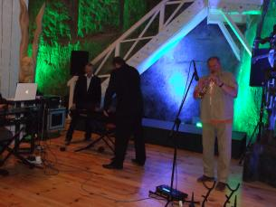
rozśpiewać się
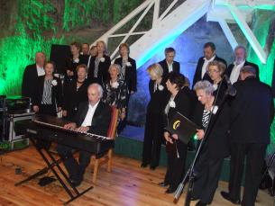 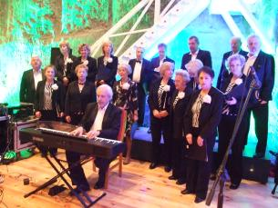
i jesteśmy gotowi do koncertu.
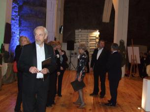 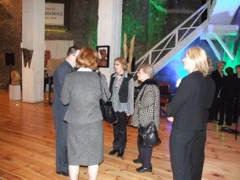 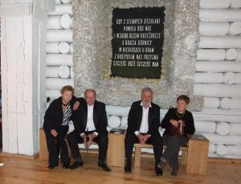
Sezon turystyczny w Kopalni Soli „Wieliczka” rozpoczął się spotkaniem w komorze Drozdowice III.
Nowy sezon otworzyła jubileuszowa 100-tna wystawa wspaniałych prac Józefa Kowalczyka.
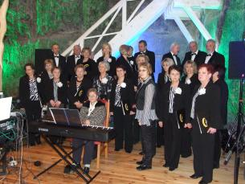 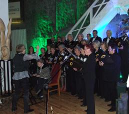
W utworze Memory partię solową zaśpiewała p. Izabela Szota – sopran, dyrygentka naszego chóru.
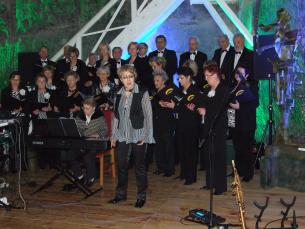
Chór uczestniczył również we fragmencie spektaklu „ANANKE” autorstwa Marka Stryszowskiego.
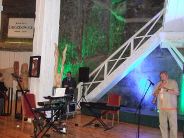 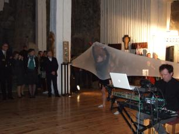
Gospodarzami tej części uroczystości byli małżonkowie, Barbara Borowiec i Józef Kowalczyk.
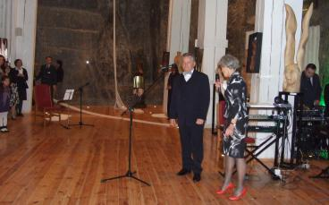
Otwarcie wystawy.
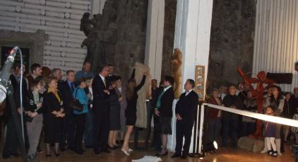
Po koncercie wszyscy z zainteresowaniem oglądali wystawione prace.
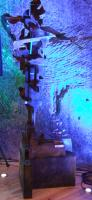 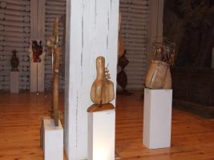 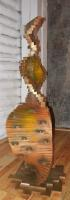 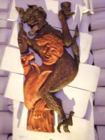

© Stowarzyszenie Muzyczne Chór Camerata Wieliczka